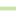

<!doctype html>
<html lang="en">
    <head>
        <meta charset="utf-8">
        <meta http-equiv="X-UA-Compatible" content="IE=edge">
        <meta name="viewport" content="initial-scale=1,user-scalable=no,maximum-scale=1,width=device-width">
        <meta name="mobile-web-app-capable" content="yes">
        <meta name="apple-mobile-web-app-capable" content="yes">
        <link rel="stylesheet" href="css/leaflet.css">
        <link rel="stylesheet" href="css/qgis2web.css"><link rel="stylesheet" href="css/fontawesome-all.min.css">
        <link rel="stylesheet" href="css/MarkerCluster.css">
        <link rel="stylesheet" href="css/MarkerCluster.Default.css">
        <link rel="stylesheet" href="css/leaflet-measure.css">
        <style>
        html, body, #map {
            width: 100%;
            height: 100%;
            padding: 0;
            margin: 0;
        }
        </style>
        <title></title>
    </head>
    <body>
        <div id="map">
        </div>
        <script src="js/qgis2web_expressions.js"></script>
        <script src="js/leaflet.js"></script>
        <script src="js/leaflet.rotatedMarker.js"></script>
        <script src="js/leaflet.pattern.js"></script>
        <script src="js/leaflet-hash.js"></script>
        <script src="js/Autolinker.min.js"></script>
        <script src="js/rbush.min.js"></script>
        <script src="js/labelgun.min.js"></script>
        <script src="js/labels.js"></script>
        <script src="js/leaflet-measure.js"></script>
        <script src="js/proj4.js"></script>
        <script src="js/proj4leaflet.js"></script>
        <script src="js/leaflet.markercluster.js"></script>
        <script src="data/zona23_1.js"></script>
        <script src="data/calleszona23_2.js"></script>
        <script src="data/PHzona23_3.js"></script>
        <script src="data/puntoszona23_4.js"></script>
        <script>
        var crs = new L.Proj.CRS('EPSG:5344', '+proj=tmerc +lat_0=-90 +lon_0=-69 +k=1 +x_0=2500000 +y_0=0 +ellps=GRS80 +towgs84=0,0,0,0,0,0,0 +units=m +no_defs', {
            resolutions: [2800, 1400, 700, 350, 175, 84, 42, 21, 11.2, 5.6, 2.8, 1.4, 0.7, 0.35, 0.14, 0.07],
        });
        var map = L.map('map', {
            crs: crs,
            continuousWorld: false,
            worldCopyJump: false, 
            zoomControl:true, maxZoom:23, minZoom:1
        }).fitBounds([[-32.96177706019217,-68.85633852026281],[-32.94987390941798,-68.82970798448578]]);
        var hash = new L.Hash(map);
        map.attributionControl.setPrefix('<a href="https://github.com/tomchadwin/qgis2web" target="_blank">qgis2web</a> &middot; <a href="https://leafletjs.com" title="A JS library for interactive maps">Leaflet</a> &middot; <a href="https://qgis.org">QGIS</a>');
        var autolinker = new Autolinker({truncate: {length: 30, location: 'smart'}});
        var measureControl = new L.Control.Measure({
            position: 'topleft',
            primaryLengthUnit: 'meters',
            secondaryLengthUnit: 'kilometers',
            primaryAreaUnit: 'sqmeters',
            secondaryAreaUnit: 'hectares'
        });
        measureControl.addTo(map);
        document.getElementsByClassName('leaflet-control-measure-toggle')[0]
        .innerHTML = '';
        document.getElementsByClassName('leaflet-control-measure-toggle')[0]
        .className += ' fas fa-ruler';
        var bounds_group = new L.featureGroup([]);
        function setBounds() {
        }
        map.createPane('pane_OpenStreetMap_0');
        map.getPane('pane_OpenStreetMap_0').style.zIndex = 400;
        var layer_OpenStreetMap_0 = L.tileLayer('http://a.tile.openstreetmap.org/{z}/{x}/{y}.png', {
            pane: 'pane_OpenStreetMap_0',
            opacity: 1.0,
            attribution: '',
            minZoom: 1,
            maxZoom: 23,
            minNativeZoom: 0,
            maxNativeZoom: 19
        });
        layer_OpenStreetMap_0;
        function pop_zona23_1(feature, layer) {
            var popupContent = '<table>\
                    <tr>\
                        <td colspan="2">' + (feature.properties['nomenc21'] !== null ? autolinker.link(feature.properties['nomenc21'].toLocaleString()) : '') + '</td>\
                    </tr>\
                    <tr>\
                        <td colspan="2">' + (feature.properties['padron'] !== null ? autolinker.link(feature.properties['padron'].toLocaleString()) : '') + '</td>\
                    </tr>\
                    <tr>\
                        <td colspan="2">' + (feature.properties['CUENTA'] !== null ? autolinker.link(feature.properties['CUENTA'].toLocaleString()) : '') + '</td>\
                    </tr>\
                    <tr>\
                        <td colspan="2">' + (feature.properties['TITULAR'] !== null ? autolinker.link(feature.properties['TITULAR'].toLocaleString()) : '') + '</td>\
                    </tr>\
                    <tr>\
                        <td colspan="2">' + (feature.properties['manz'] !== null ? autolinker.link(feature.properties['manz'].toLocaleString()) : '') + '</td>\
                    </tr>\
                </table>';
            layer.bindPopup(popupContent, {maxHeight: 400});
        }

        function style_zona23_1_0() {
            return {
                pane: 'pane_zona23_1',
                opacity: 1,
                color: 'rgba(255,0,0,1.0)',
                dashArray: '',
                lineCap: 'butt',
                lineJoin: 'miter',
                weight: 2.0, 
                fill: true,
                fillOpacity: 1,
                fillColor: 'rgba(114,155,111,0.0)',
                interactive: false,
            }
        }
        map.createPane('pane_zona23_1');
        map.getPane('pane_zona23_1').style.zIndex = 401;
        map.getPane('pane_zona23_1').style['mix-blend-mode'] = 'normal';
        var layer_zona23_1 = new L.geoJson(json_zona23_1, {
            attribution: '',
            interactive: false,
            dataVar: 'json_zona23_1',
            layerName: 'layer_zona23_1',
            pane: 'pane_zona23_1',
            onEachFeature: pop_zona23_1,
            style: style_zona23_1_0,
        });
        bounds_group.addLayer(layer_zona23_1);
        map.addLayer(layer_zona23_1);
        function pop_calleszona23_2(feature, layer) {
            var popupContent = '<table>\
                    <tr>\
                        <th scope="row">nomb</th>\
                        <td>' + (feature.properties['nomb'] !== null ? autolinker.link(feature.properties['nomb'].toLocaleString()) : '') + '</td>\
                    </tr>\
                </table>';
            layer.bindPopup(popupContent, {maxHeight: 400});
        }

        function style_calleszona23_2_0() {
            return {
                pane: 'pane_calleszona23_2',
                opacity: 1,
                color: 'rgba(178,223,138,1.0)',
                dashArray: '',
                lineCap: 'square',
                lineJoin: 'bevel',
                weight: 4.0,
                fillOpacity: 0,
                interactive: true,
            }
        }
        map.createPane('pane_calleszona23_2');
        map.getPane('pane_calleszona23_2').style.zIndex = 402;
        map.getPane('pane_calleszona23_2').style['mix-blend-mode'] = 'normal';
        var layer_calleszona23_2 = new L.geoJson(json_calleszona23_2, {
            attribution: '',
            interactive: true,
            dataVar: 'json_calleszona23_2',
            layerName: 'layer_calleszona23_2',
            pane: 'pane_calleszona23_2',
            onEachFeature: pop_calleszona23_2,
            style: style_calleszona23_2_0,
        });
        bounds_group.addLayer(layer_calleszona23_2);
        function pop_PHzona23_3(feature, layer) {
            var popupContent = '<table>\
                    <tr>\
                        <th scope="row">PADRON MUN</th>\
                        <td>' + (feature.properties['PADRON MUN'] !== null ? autolinker.link(feature.properties['PADRON MUN'].toLocaleString()) : '') + '</td>\
                    </tr>\
                    <tr>\
                        <th scope="row">TITULAR</th>\
                        <td>' + (feature.properties['TITULAR'] !== null ? autolinker.link(feature.properties['TITULAR'].toLocaleString()) : '') + '</td>\
                    </tr>\
                    <tr>\
                        <th scope="row">REAL_CALLE</th>\
                        <td>' + (feature.properties['REAL_CALLE'] !== null ? autolinker.link(feature.properties['REAL_CALLE'].toLocaleString()) : '') + '</td>\
                    </tr>\
                    <tr>\
                        <th scope="row">REAL_NRO</th>\
                        <td>' + (feature.properties['REAL_NRO'] !== null ? autolinker.link(feature.properties['REAL_NRO'].toLocaleString()) : '') + '</td>\
                    </tr>\
                    <tr>\
                        <th scope="row">REAL_MZA</th>\
                        <td>' + (feature.properties['REAL_MZA'] !== null ? autolinker.link(feature.properties['REAL_MZA'].toLocaleString()) : '') + '</td>\
                    </tr>\
                    <tr>\
                        <th scope="row">REAL_CASA</th>\
                        <td>' + (feature.properties['REAL_CASA'] !== null ? autolinker.link(feature.properties['REAL_CASA'].toLocaleString()) : '') + '</td>\
                    </tr>\
                </table>';
            layer.bindPopup(popupContent, {maxHeight: 400});
        }

        function style_PHzona23_3_0() {
            return {
                pane: 'pane_PHzona23_3',
                radius: 8.0,
                opacity: 1,
                color: 'rgba(61,128,53,1.0)',
                dashArray: '',
                lineCap: 'butt',
                lineJoin: 'miter',
                weight: 2.0,
                fill: true,
                fillOpacity: 1,
                fillColor: 'rgba(84,176,74,1.0)',
                interactive: true,
            }
        }
        map.createPane('pane_PHzona23_3');
        map.getPane('pane_PHzona23_3').style.zIndex = 403;
        map.getPane('pane_PHzona23_3').style['mix-blend-mode'] = 'normal';
        var layer_PHzona23_3 = new L.geoJson(json_PHzona23_3, {
            attribution: '',
            interactive: true,
            dataVar: 'json_PHzona23_3',
            layerName: 'layer_PHzona23_3',
            pane: 'pane_PHzona23_3',
            onEachFeature: pop_PHzona23_3,
            pointToLayer: function (feature, latlng) {
                var context = {
                    feature: feature,
                    variables: {}
                };
                return L.circleMarker(latlng, style_PHzona23_3_0(feature));
            },
        });
        var cluster_PHzona23_3 = new L.MarkerClusterGroup({showCoverageOnHover: false,
            spiderfyDistanceMultiplier: 2});
        cluster_PHzona23_3.addLayer(layer_PHzona23_3);

        bounds_group.addLayer(layer_PHzona23_3);
        cluster_PHzona23_3.addTo(map);
        function pop_puntoszona23_4(feature, layer) {
            var popupContent = '<table>\
                    <tr>\
                        <th scope="row">padron</th>\
                        <td>' + (feature.properties['padron'] !== null ? autolinker.link(feature.properties['padron'].toLocaleString()) : '') + '</td>\
                    </tr>\
                    <tr>\
                        <th scope="row">CUIT</th>\
                        <td>' + (feature.properties['CUIT'] !== null ? autolinker.link(feature.properties['CUIT'].toLocaleString()) : '') + '</td>\
                    </tr>\
                    <tr>\
                        <th scope="row">TITULAR</th>\
                        <td>' + (feature.properties['TITULAR'] !== null ? autolinker.link(feature.properties['TITULAR'].toLocaleString()) : '') + '</td>\
                    </tr>\
                    <tr>\
                        <th scope="row">REAL_CALLE</th>\
                        <td>' + (feature.properties['REAL_CALLE'] !== null ? autolinker.link(feature.properties['REAL_CALLE'].toLocaleString()) : '') + '</td>\
                    </tr>\
                    <tr>\
                        <th scope="row">REAL_NRO</th>\
                        <td>' + (feature.properties['REAL_NRO'] !== null ? autolinker.link(feature.properties['REAL_NRO'].toLocaleString()) : '') + '</td>\
                    </tr>\
                    <tr>\
                        <th scope="row">REAL_MZA</th>\
                        <td>' + (feature.properties['REAL_MZA'] !== null ? autolinker.link(feature.properties['REAL_MZA'].toLocaleString()) : '') + '</td>\
                    </tr>\
                    <tr>\
                        <th scope="row">REAL_CASA</th>\
                        <td>' + (feature.properties['REAL_CASA'] !== null ? autolinker.link(feature.properties['REAL_CASA'].toLocaleString()) : '') + '</td>\
                    </tr>\
                </table>';
            layer.bindPopup(popupContent, {maxHeight: 400});
        }

        function style_puntoszona23_4_0() {
            return {
                pane: 'pane_puntoszona23_4',
                radius: 8.0,
                opacity: 1,
                color: 'rgba(128,17,25,1.0)',
                dashArray: '',
                lineCap: 'butt',
                lineJoin: 'miter',
                weight: 2.0,
                fill: true,
                fillOpacity: 1,
                fillColor: 'rgba(219,30,42,1.0)',
                interactive: true,
            }
        }
        map.createPane('pane_puntoszona23_4');
        map.getPane('pane_puntoszona23_4').style.zIndex = 404;
        map.getPane('pane_puntoszona23_4').style['mix-blend-mode'] = 'normal';
        var layer_puntoszona23_4 = new L.geoJson(json_puntoszona23_4, {
            attribution: '',
            interactive: true,
            dataVar: 'json_puntoszona23_4',
            layerName: 'layer_puntoszona23_4',
            pane: 'pane_puntoszona23_4',
            onEachFeature: pop_puntoszona23_4,
            pointToLayer: function (feature, latlng) {
                var context = {
                    feature: feature,
                    variables: {}
                };
                return L.circleMarker(latlng, style_puntoszona23_4_0(feature));
            },
        });
        bounds_group.addLayer(layer_puntoszona23_4);
        var baseMaps = {};
        L.control.layers(baseMaps,{' puntos zona 23': layer_puntoszona23_4,' PH zona 23': cluster_PHzona23_3,' calles zona 23': layer_calleszona23_2,' zona 23': layer_zona23_1,"OpenStreetMap": layer_OpenStreetMap_0,},{collapsed:false}).addTo(map);
        setBounds();
        </script>
    </body>
</html>
